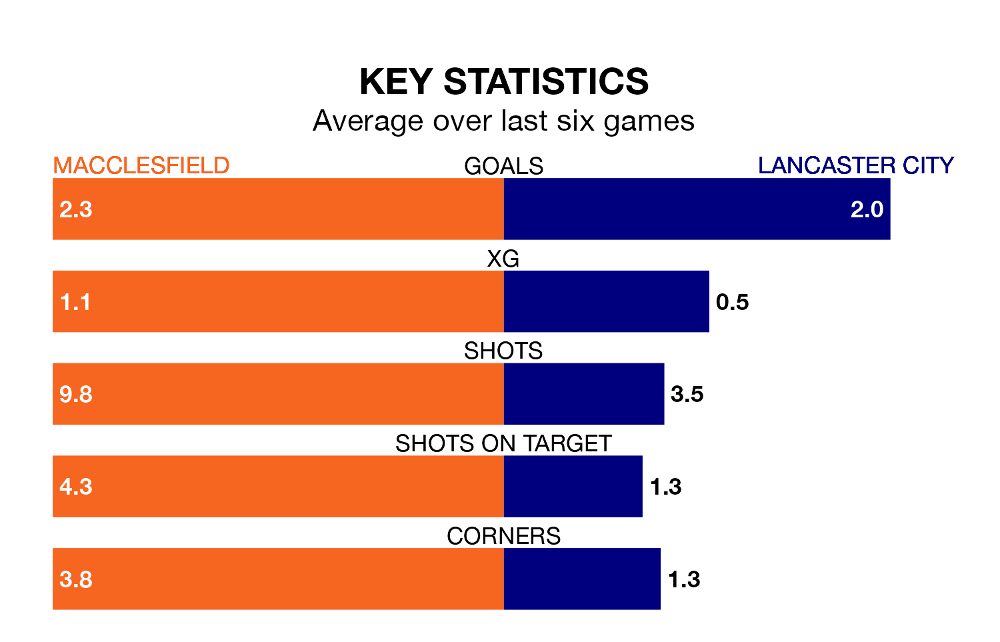

Two of Northern Premier League's meanest defences go head-to-head on Saturday, when Macclesfield host Lancaster City.
Only one side – Rylands – has conceded fewer goals than Macclesfield to date: the home side have let in just 26 goals in 23 games.
Lancaster have conceded 28 goals in 22 games, giving them the joint-fourth tightest back line so far this season.
Macclesfield are fourth in the table after 23 games, of which they have won 12 and drawn five, earning 41 points.
Lancaster are eight places behind the home side in 12th, with nine wins and six draws putting them on 33 points.
Macclesfield are in reasonable form in Northern Premier League, with three wins and two draws from their last six games.
And also with three wins and two draws over that period, City's form is identical – they have both taken 11 points from 18.
Macclesfield's last match was on Monday, a 3-2 win against Rylands.
Lancaster beat Atherton Collieries 3-2 last time out, also on Monday.
Updated: 12:57, 02/01/24